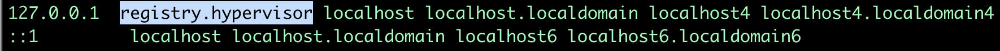

Solution Pattern: Run your private workloads in Disconnected HCP OpenShift clusters with OpenShift Virtualization
Workshop
2. Delivering the workshop
2.1. Deploying Internal Registry
-
Download oc-mirror cli:
curl -L -o oc-mirror.tar.gz https://mirror.openshift.com/pub/openshift-v4/amd64/clients/ocp/4.18.0-rc.8/oc-mirror.tar.gz;tar -xzf oc-mirror.tar.gz;chmod u+x oc-mirror -
Create a pull secret file, you can get your pull secret from console.redhat.com and paste it in the file:
vi ./openshift_pull.json -
Create this bash script for creating an internal registry:
vi ./registry.sh#!/usr/bin/env bash set -euo pipefail PRIMARY_NIC=$(ls -1 /sys/class/net | grep -v podman | head -1) export PATH=/root/bin:$PATH export PULL_SECRET="/home/lab-user/openshift_pull.json" if [[ ! -f $PULL_SECRET ]];then echo "Pull Secret not found, exiting..." exit 1 fi dnf -y install podman httpd httpd-tools jq skopeo libseccomp-devel export IP=$(ip -o addr show $PRIMARY_NIC | head -1 | awk '{print $4}' | cut -d'/' -f1) REGISTRY_NAME=registry.$(hostname --long) REGISTRY_USER=dummy REGISTRY_PASSWORD=dummy KEY=$(echo -n $REGISTRY_USER:$REGISTRY_PASSWORD | base64) echo "{\"auths\": {\"$REGISTRY_NAME:5000\": {\"auth\": \"$KEY\", \"email\": \"sample-email@domain.ltd\"}}}" > /root/disconnected_pull.json mv ${PULL_SECRET} /root/openshift_pull.json.old jq ".auths += {\"$REGISTRY_NAME:5000\": {\"auth\": \"$KEY\",\"email\": \"sample-email@domain.ltd\"}}" < /root/openshift_pull.json.old > $PULL_SECRET mkdir -p /opt/registry/{auth,certs,data,conf} cat <<EOF > /opt/registry/conf/config.yml version: 0.1 log: fields: service: registry storage: cache: blobdescriptor: inmemory filesystem: rootdirectory: /var/lib/registry delete: enabled: true http: addr: :5000 headers: X-Content-Type-Options: [nosniff] health: storagedriver: enabled: true interval: 10s threshold: 3 compatibility: schema1: enabled: true EOF openssl req -newkey rsa:4096 -nodes -sha256 -keyout /opt/registry/certs/domain.key -x509 -days 3650 -out /opt/registry/certs/domain.crt -subj "/C=US/ST=Madrid/L=San Bernardo/O=Karmalabs/OU=Guitar/CN=$REGISTRY_NAME" -addext "subjectAltName=DNS:$REGISTRY_NAME" cp /opt/registry/certs/domain.crt /etc/pki/ca-trust/source/anchors/ update-ca-trust extract htpasswd -bBc /opt/registry/auth/htpasswd $REGISTRY_USER $REGISTRY_PASSWORD podman create --name registry --net host --security-opt label=disable --replace -v /opt/registry/data:/var/lib/registry -v /opt/registry/auth:/auth -v /opt/registry/conf/config.yml:/etc/docker/registry/config.yml -e "REGISTRY_AUTH=htpasswd" -e "REGISTRY_AUTH_HTPASSWD_REALM=Registry" -e "REGISTRY_HTTP_SECRET=ALongRandomSecretForRegistry" -e REGISTRY_AUTH_HTPASSWD_PATH=/auth/htpasswd -v /opt/registry/certs:/certs -e REGISTRY_HTTP_TLS_CERTIFICATE=/certs/domain.crt -e REGISTRY_HTTP_TLS_KEY=/certs/domain.key docker.io/library/registry:latest [ "$?" == "0" ] || !! -
Create registry by running:
chmod u+x ./registry.sh sudo ./registry.sh sudo podman start registry -
Check registry status by using the following command:
sudo podman ps -
Make changes to ensure registry is reachable from jump box and management nodes. Add an entry in /etc/hosts for registry.hypervisor in 127.0.0.1 line on jump box/bastion.
sudo vi /etc/hosts -
Add an entry to dnsmasq so that registry dns is accessible from OpenShift. Add this line: host-record=registry.hypervisor,192.168.125.1
sudo vi /opt/dnsmasq/include.d/infrastructure-host.ipv4 -
Restart dnsmasq using the below command:
sudo systemctl restart dnsmasq-virt
2.2. Copying images to internal registry and adding configs to the cluster:
-
Create a file named imageset.yaml using the following code:
cat << EOF > $HOME/imageset-config.yaml --- kind: ImageSetConfiguration apiVersion: mirror.openshift.io/v2alpha1 mirror: platform: channels: - name: stable-4.17 type: ocp minVersion: 4.17.15 maxVersion: 4.17.16 kubeVirtContainer: true operators: - catalog: registry.redhat.io/redhat/redhat-operator-index:v4.17 packages: - name: web-terminal channels: - name: fast - name: lvms-operator - name: local-storage-operator - name: odf-csi-addons-operator - name: odf-operator - name: mcg-operator - name: ocs-operator - name: metallb-operator - name: kubevirt-hyperconverged - name: multicluster-engine - name: advanced-cluster-management additionalImages: - name: registry.redhat.io/rhel8/support-tools - name: quay.io/karmab/origin-keepalived-ipfailover:latest - name: registry.redhat.io/openshift4/ose-kube-rbac-proxy:v4.10 helm: {} EOF -
Generate Credentials to be used by oc-mirror command:
sudo podman login registry.hypervisor:5000 --authfile=/home/lab-user/openshift_pull.json;mkdir -p $XDG_RUNTIME_DIR/containers/;sudo cp /home/lab-user/openshift_pull.json $XDG_RUNTIME_DIR/containers/auth.json;sudo mkdir -p /root/.docker;sudo cp $XDG_RUNTIME_DIR/containers/auth.json /root/.docker/config.json -
Run oc-mirror cli command to mirror the images:
sudo mkdir -p /home/lab-user/mirror1 sudo ./oc-mirror -c ./imageset-config.yaml --workspace file:///home/lab-user/mirror1 docker://registry.hypervisor:5000 --v2


-
Login to OpenShift using this cli command and add the Registry CA to the Management Cluster
oc login -u <user> -p <password> <apiserver_url>-
Grab the cert from /opt/registry/certs/domain.crt and add in this yaml to create a configmap
apiVersion: v1
kind: ConfigMap
metadata:
name: registry-config
namespace: openshift-config
data:
registry.hypervisor..5000: |
-----BEGIN CERTIFICATE-----
-----END CERTIFICATE------
Before applying this configmap, validate your yaml using this tool.
oc apply -f registry-config.yaml-
Now we need to patch the clusterwide object image.config.openshift.io including this:
oc edit image.config.openshift.iospec:
additionalTrustedCA:
name: registry-config-
Update the registry creds in the Management cluster. If this command prompts for username and password: dummy/dummy.
sudo podman logout registry.hypervisor:5000 ;sudo podman login registry.hypervisor:5000 --authfile=./mycreds.json; sudo chmod 666 ./mycreds.json;oc set data secret/pull-secret -n openshift-config --from-file=.dockerconfigjson=./mycreds.json-
As the mirroring process is complete, apply the YAML files from the results directory to the cluster by running the following command:
oc apply -f /home/lab-user/mirror1/working-dir/cluster-resources/itms-oc-mirror.yaml /home/lab-user/mirror1/working-dir/cluster-resources/idms-oc-mirror.yaml
-
After 2 mins, run the below command:
oc apply -f /home/lab-user/mirror1/working-dir/cluster-resources/cs-redhat-operator-index-v4-<version>.yaml
-
To verify the resources created with above command:
oc get imagedigestmirrorset
oc get imagetagmirrorset
oc get catalogsource -n openshift-marketplace2.3. Deploying Operators from Internal Registry:
-
To disable the default CatalogSource
oc patch OperatorHub cluster --type json -p '[{"op": "add", "path": "/spec/disableAllDefaultSources", "value": true}]'
2.3.1. RHACM Installation
We are installing RHACM as we need MCE for the cluster provisioning. MCE is required for this setup. You can install MCE only if you prefer.
-
Install RHACM operator from OperatorHub
-
Select default values and install the operator.

-
Once installed, click on Create MulticlusterHub.
-
Once multicluster hub is in running status, our RHACM installation is successful.

2.3.2. OpenShift Virtualization Installation
Now we will install OpenShift Virtualization using default values:
-
Install OpenShift Virtualization operator from OperatorHub

-
Select default values and install the operator.


-
Click on "Create HyperConverged" and select default values.

-
Once kubevirt-hyperconverged is installed successfully, we can proceed with HCP cluster creation.
2.4. Hosted Control Plane Cluster creation:
-
Creating hosted cluster namespace(clusters-disconnected1) and adding the Registry CA and credentials to the HostedCluster namespace.
---
apiVersion: v1
kind: Namespace
metadata:
creationTimestamp: null
name: clusters-disconnected1
spec: {}
status: {}
---
apiVersion: v1
kind: Namespace
metadata:
creationTimestamp: null
name: clusters
spec: {}
status: {}-
Copy the Registry CA cert from here /opt/registry/certs/domain.crt and create a configmap as shown below.
apiVersion: v1
data:
ca-bundle.crt: |
-----BEGIN CERTIFICATE-----
-----END CERTIFICATE-----
kind: ConfigMap
metadata:
name: user-ca-bundle
namespace: clusters-
Create a secret for Hosted Cluster to access the Registry.
oc create secret generic disconnected-secret -n clusters --from-file=.dockerconfigjson=./mycreds.json --type=kubernetes.io/dockerconfigjson-
Apply this CRD to create a Hosted Cluster and Node Pool.
apiVersion: hypershift.openshift.io/v1beta1
kind: HostedCluster
metadata:
creationTimestamp: null
name: disconnected1
namespace: clusters
spec:
additionalTrustBundle:
name: "user-ca-bundle"
imageContentSources:
- source: quay.io/openshift-release-dev/ocp-v4.0-art-dev
mirrors:
- registry.hypervisor:5000/openshift/release
- source: quay.io/openshift-release-dev/ocp-release
mirrors:
- registry.hypervisor:5000/openshift/release-images
autoscaling: {}
configuration:
operatorhub:
disableAllDefaultSources: true
controllerAvailabilityPolicy: HighlyAvailable
dns:
baseDomain: ""
etcd:
managed:
storage:
persistentVolume:
size: 8Gi
type: PersistentVolume
managementType: Managed
fips: false
infraID: disconnected1-5lmsw
networking:
clusterNetwork:
- cidr: 10.132.0.0/14
networkType: OVNKubernetes
serviceNetwork:
- cidr: 172.31.0.0/16
olmCatalogPlacement: management
platform:
kubevirt:
baseDomainPassthrough: true
type: KubeVirt
pullSecret:
name: disconnected-secret
release:
image: registry.hypervisor:5000/openshift/release-images:4.17.15-x86_64
services:
- service: APIServer
servicePublishingStrategy:
type: LoadBalancer
- service: Ignition
servicePublishingStrategy:
type: Route
- service: Konnectivity
servicePublishingStrategy:
type: Route
- service: OAuthServer
servicePublishingStrategy:
type: Route
sshKey: {}
status:
controlPlaneEndpoint:
host: ""
port: 0
---
apiVersion: hypershift.openshift.io/v1beta1
kind: NodePool
metadata:
creationTimestamp: null
name: disconnected1
namespace: clusters
spec:
arch: amd64
clusterName: disconnected1
management:
autoRepair: false
upgradeType: Replace
nodeDrainTimeout: 0s
nodeVolumeDetachTimeout: 0s
platform:
kubevirt:
attachDefaultNetwork: true
compute:
cores: 2
memory: 6Gi
networkInterfaceMultiqueue: Enable
rootVolume:
persistent:
size: 32Gi
type: Persistent
type: KubeVirt
release:
image: registry.hypervisor:5000/openshift/release-images:4.17.15-x86_64
replicas: 2
status:
replicas: 0-
We can check the status of our Hosted Cluster using the below commands:
oc get --namespace clusters hostedclusters
oc get pod -n clusters-disconnected1
oc get pod -n clusters-disconnected1
-
We can create kubeconfig file and run oc cli commands as well:
-
First download the hcp cli, If you face issue in the wget for tls cert, use --no-check-certificate
-
oc get ConsoleCLIDownload hcp-cli-download -o json | jq -r ".spec"
wget <hcp_cli_download_url>
tar xvzf hcp.tar.gz
chmod +x hcp
sudo mv hcp /usr/local/bin/../hcp create kubeconfig --name disconnected1 > disconnected1-kubeconfig
oc get nodes --kubeconfig=disconnected1-kubeconfig
oc -n clusters get nodepool
-
From OpenShift Console, when we go to Virtual Machines, we see: